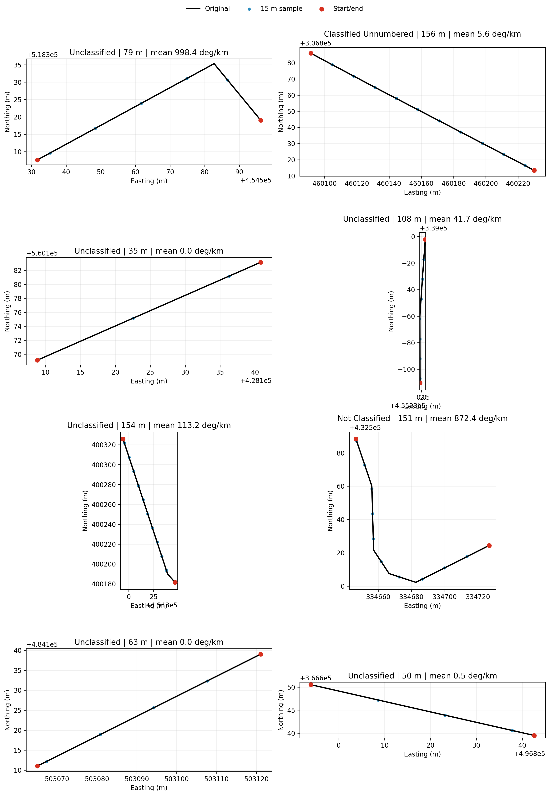

This page turns the curvature research note into a concrete, reproducible inspection of the Open Roads geometry. The aim is not to produce engineering-grade curve radius. It is to check whether the centreline geometry can support a conservative link-level ranking signal for the collision model.
The background argument is:
Horizontal curves are a recognised crash-risk factor, especially for roadway-departure crashes.
OS Open Roads gives broad coverage and stable enough link geometry for feature engineering, but it is a generalised 1:25,000-scale product.
Curvature should therefore be treated as a screening/ranking proxy rather than a survey-grade design measure.
The implementation uses a vertex-density gate by road class so sparse geometry is left as missing instead of being silently interpreted as straight.
For each road link, the curvature module does the following:
Load OS Open Roads geometry and reproject it to a metre-based CRS if needed.
Normalise the geometry to a single LineString; disjoint MultiLineString geometries keep the longest part.
Count original geometry vertices and calculate vertices_per_km.
Decide which road classes pass the operational geometry-quality gate: median vertices_per_km >= 40 and 25th percentile vertices_per_km >= 20.
Resample eligible links at 15 m spacing.
Calculate absolute turning angle at each interior resampled point.
Store three features: mean_curvature_deg_per_km, max_curvature_deg_per_km, and sinuosity.
mean_curvature_deg_per_km is total absolute turning angle per kilometre of link. It is therefore interpretable as “how much the link turns overall”. max_curvature_deg_per_km is the sharpest local turning-angle density found on the resampled line, capped at 10,000 deg/km to suppress single-vertex artefacts. sinuosity is link_length / straight_line_distance, clipped at 5.0 for near-closed loop-like geometries.
ifnot OPENROADS_PATH.exists():raiseFileNotFoundError(f"Open Roads parquet not found: {OPENROADS_PATH}")openroads = gpd.read_parquet(OPENROADS_PATH)print(f"Loaded {len(openroads):,} OS Open Roads links from {OPENROADS_PATH.relative_to(ROOT)}")print(f"Source CRS: {openroads.crs}")
Loaded 2,167,557 OS Open Roads links from data/processed/shapefiles/openroads.parquet
Source CRS: {"$schema": "https://proj.org/schemas/v0.7/projjson.schema.json", "type": "GeographicCRS", "name": "WGS 84", "datum_ensemble": {"name": "World Geodetic System 1984 ensemble", "members": [{"name": "World Geodetic System 1984 (Transit)"}, {"name": "World Geodetic System 1984 (G730)"}, {"name": "World Geodetic System 1984 (G873)"}, {"name": "World Geodetic System 1984 (G1150)"}, {"name": "World Geodetic System 1984 (G1674)"}, {"name": "World Geodetic System 1984 (G1762)"}, {"name": "World Geodetic System 1984 (G2139)"}, {"name": "World Geodetic System 1984 (G2296)"}], "ellipsoid": {"name": "WGS 84", "semi_major_axis": 6378137, "inverse_flattening": 298.257223563}, "accuracy": "2.0", "id": {"authority": "EPSG", "code": 6326}}, "coordinate_system": {"subtype": "ellipsoidal", "axis": [{"name": "Geodetic latitude", "abbreviation": "Lat", "direction": "north", "unit": "degree"}, {"name": "Geodetic longitude", "abbreviation": "Lon", "direction": "east", "unit": "degree"}]}, "scope": "Horizontal component of 3D system.", "area": "World.", "bbox": {"south_latitude": -90, "west_longitude": -180, "north_latitude": 90, "east_longitude": 180}, "id": {"authority": "EPSG", "code": 4326}}
gdf = openroads.copy()gdf["geometry"] = gdf.geometry.apply(normalise_linestring)gdf = gdf.loc[gdf.geometry.notna()].copy()if gdf.crs isNone:raiseValueError("Input CRS is missing; curvature needs a metric CRS.")units = (getattr(gdf.crs.axis_info[0], "unit_name", "").lower()if gdf.crs.axis_infoelse"")if"metre"notin units and"meter"notin units: gdf = gdf.to_crs(27700)gdf["calc_length_m"] = gdf.geometry.lengthgdf = gdf.loc[gdf["calc_length_m"] >0].copy()gdf["vertex_count"] = gdf.geometry.apply(vertex_count)gdf["vertices_per_km"] = gdf["vertex_count"] / (gdf["calc_length_m"] /1000)print(f"Metric CRS used for curvature: {gdf.crs}")print(f"Usable non-empty LineString links: {len(gdf):,}")
Metric CRS used for curvature: EPSG:27700
Usable non-empty LineString links: 2,167,557
3 Geometry Quality Gate
The gate is deliberately operational. It is not an OS-published standard; it is a guardrail for using 15 m resampling on already-generalised Open Roads centreline geometry. Classes that fail the gate should keep curvature as NaN so sparse linework does not become a false zero-curvature signal.
Original geometry vertex density by road class. Dashed lines show the p25 and median gate thresholds.
4 Seeded Random Road-Section Sample
The table and plots below use a reproducible random sample from the actual OS Open Roads parquet. The sample is restricted to links with at least three vertices and length between 30 m and 2 km, so every plotted section has enough geometry to inspect. Curvature is calculated for every sampled section for diagnostic visibility; the passes_class_gate column shows whether production code would persist those values or leave them missing.
Seed 20260421 selected 8 links from 1,845,997 eligible road sections.
link_id
road_classification
form_of_way
road_name
start_node
end_node
calc_length_m
vertex_count
vertices_per_km
passes_class_gate
mean_curvature_deg_per_km
max_curvature_deg_per_km
sinuosity
0
44280356-A6F5-4FF8-AB95-713DD95CD4CC
Unclassified
Single Carriageway
3C3A4374-1ED0-451D-ACF4-175CD790F9EF
C67E4253-6E96-464D-9B70-5CA4D67946AD
79.164
4
50.528
True
998.386
3608.360
1.210
5
3CB73090-FF8F-417C-B46C-6AD368C3A54B
Not Classified
Single Carriageway
Pasture Close
5A9E2542-979C-4CD6-B087-C6C25E2594B7
E491F454-80E8-4A86-B208-EFF89A237EE4
151.464
9
59.420
True
872.444
2481.432
1.478
4
BE3CE2CE-C1CB-443E-ABE2-7C9D48279163
Unclassified
Single Carriageway
Wrightson Avenue
645C4237-F279-4D59-968F-C7CF9283C2D9
CD39309E-62E6-4000-B2C9-5FC9F842CF8A
154.342
4
25.916
True
113.225
1174.140
1.006
3
F1BE01C7-E58C-4093-8014-85B9CFFEED18
Unclassified
Single Carriageway
Gregory Street
10380C8B-4137-4B96-96CB-0056E6B70E34
C40FDD24-F378-4E0B-98E8-F7528FF7D285
108.148
7
64.726
True
41.738
231.213
1.001
1
C4B7A336-9E0F-4446-916B-E943F9E244CB
Classified Unnumbered
Single Carriageway
Gipsy Lane
AC3C7397-2AE5-49A3-AEB5-74A9C2A9D8C0
84CC2165-9BD5-43A7-BC6B-91333C7FC8FC
156.340
9
57.567
True
5.611
26.189
1.000
7
9AC3CFA6-7FDA-446F-9395-7343CE6C2815
Unclassified
Single Carriageway
Dalewood
859686FD-5C36-4167-98E7-8807276BBBCD
D46680DA-2623-424F-B494-B2DAFDAC895D
49.906
5
100.188
True
0.476
0.890
1.000
2
80FA9366-B954-4A23-A0F3-4D87149FDCDC
Unclassified
Single Carriageway
Cedarway
A13E47E6-409B-47D4-90EF-41519EE409DD
3FF8A033-483B-45E3-9AF7-2A310955F405
34.929
3
85.888
True
0.000
0.000
1.000
6
8491CCDF-EF5F-4A21-8F49-BF7E9022ECE3
Unclassified
Single Carriageway
Byward Drive
958B158C-89DC-4616-9E57-54B5B19DABC9
F3B26BEE-8E49-473C-86BE-0B4277675EBB
62.611
3
47.915
True
0.000
0.000
1.000
4.1 Sample Section Plots
Black lines are the original OS Open Roads link geometry. Blue points are the 15 m resampled points used for turning-angle calculation. Red points are the start and end nodes.

Seeded random sample of Open Roads links with original geometry and 15 m resampled points.
5 Start/End Nodes and Geometry Coordinates
This table exposes the node-level geometry used by the plots. Coordinates are in the metric CRS used for curvature calculation, currently British National Grid if the source parquet is WGS84.
link_id
node_role
node_id
x_m
y_m
0
44280356-A6F5-4FF8-AB95-713DD95CD4CC
start
3C3A4374-1ED0-451D-ACF4-175CD790F9EF
454596.137
518319.037
1
44280356-A6F5-4FF8-AB95-713DD95CD4CC
end
C67E4253-6E96-464D-9B70-5CA4D67946AD
454531.707
518307.597
2
C4B7A336-9E0F-4446-916B-E943F9E244CB
start
AC3C7397-2AE5-49A3-AEB5-74A9C2A9D8C0
460091.514
306885.928
3
C4B7A336-9E0F-4446-916B-E943F9E244CB
end
84CC2165-9BD5-43A7-BC6B-91333C7FC8FC
460230.022
306813.420
4
80FA9366-B954-4A23-A0F3-4D87149FDCDC
start
A13E47E6-409B-47D4-90EF-41519EE409DD
428108.818
560169.152
5
80FA9366-B954-4A23-A0F3-4D87149FDCDC
end
3FF8A033-483B-45E3-9AF7-2A310955F405
428140.819
560183.152
6
F1BE01C7-E58C-4093-8014-85B9CFFEED18
start
10380C8B-4137-4B96-96CB-0056E6B70E34
455232.797
338997.709
7
F1BE01C7-E58C-4093-8014-85B9CFFEED18
end
C40FDD24-F378-4E0B-98E8-F7528FF7D285
455228.798
338889.708
8
BE3CE2CE-C1CB-443E-ABE2-7C9D48279163
start
645C4237-F279-4D59-968F-C7CF9283C2D9
454346.577
400181.554
9
BE3CE2CE-C1CB-443E-ABE2-7C9D48279163
end
CD39309E-62E6-4000-B2C9-5FC9F842CF8A
454294.179
400325.815
10
3CB73090-FF8F-417C-B46C-6AD368C3A54B
start
5A9E2542-979C-4CD6-B087-C6C25E2594B7
334726.767
432524.459
11
3CB73090-FF8F-417C-B46C-6AD368C3A54B
end
E491F454-80E8-4A86-B208-EFF89A237EE4
334646.645
432588.347
12
8491CCDF-EF5F-4A21-8F49-BF7E9022ECE3
start
958B158C-89DC-4616-9E57-54B5B19DABC9
503121.067
484139.036
13
8491CCDF-EF5F-4A21-8F49-BF7E9022ECE3
end
F3B26BEE-8E49-473C-86BE-0B4277675EBB
503065.066
484111.035
14
9AC3CFA6-7FDA-446F-9395-7343CE6C2815
start
859686FD-5C36-4167-98E7-8807276BBBCD
496793.943
366650.528
15
9AC3CFA6-7FDA-446F-9395-7343CE6C2815
end
D46680DA-2623-424F-B494-B2DAFDAC895D
496842.613
366639.488
The next table lists the first few original geometry vertices per sampled road section. It is intentionally compact: enough to show the actual coordinate sequence, without printing every point for long links.
normalise_linestring() handles empty geometry, LineString, and MultiLineString cases before feature calculation.
ensure_metric_crs() converts longitude/latitude geometry to EPSG:27700 so spacing and length calculations are in metres.
resample_linestring() interpolates points every 15 m and keeps the link end point, so short residual segments are still represented.
turning_angle_features() computes angle changes between consecutive resampled segments, converts those into degrees per kilometre, and returns: mean_curvature_deg_per_km, max_curvature_deg_per_km, and sinuosity.
main() runs the vertex-density gate by road_classification, computes features only for passing classes, writes the columns to data/features/network_features.parquet, and writes QA CSV summaries.
The deliberate modelling choice is missingness over false certainty. If a road class fails the vertex-density gate, its curvature features stay NaN rather than being filled with zero. That preserves the distinction between “this link is straight in usable geometry” and “the source geometry is too sparse to support curvature”.
7 Interpretation
For modelling, the expected useful signal is relative rather than absolute: links with more turning per kilometre should rank above straighter links. The numbers should not be read as design-speed radius or engineering inventory values. That limitation is acceptable for a link-level risk model as long as the feature is documented, quality-gated, and evaluated against held-out collision outcomes before being promoted into the main model feature lists.